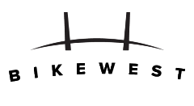
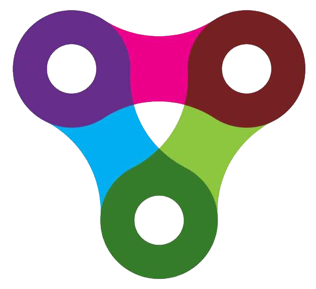
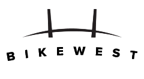
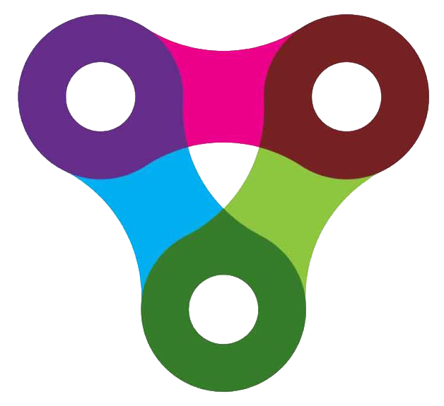

0 / 1000
Your report will appear on the map immediately.
We'll send a verification link to confirm your report
0 / 1000
Your report will appear on the map immediately.
We'll send a verification link to confirm your report
Why this project exists
Cycling near misses are almost never reported.
Every day, cyclists experience dangerous close passes, left hooks, dooring incidents and aggressive driving — yet almost none of these events make it into official road safety data. Cyclists brush them off and ride on. The result is a massive blind spot in how we understand road safety.
Police data only tells part of the story:
The scale of the problem:
This map exists to fill that gap. By crowdsourcing reports of near misses, dangerous intersections, poor infrastructure and everyday annoyances, we build a picture of cycling safety that official statistics completely miss.
The data collected here can help councils, transport planners and advocacy groups push for evidence-based improvements where they’re needed most.
Sources:
Poulos et al. (2015). Under-reporting bicycle accidents to police in the COST TU1101 international survey. Accident Analysis & Prevention.
Aldred, R. & Crosweller, S. (2015). Investigating the rates and impacts of near misses among UK cyclists. Journal of Transport & Health.
AIHW (2024). Sports injury in Australia: Cycling. Australian Institute of Health and Welfare.
BITRE (2024). Road Trauma Australia. Bureau of Infrastructure and Transport Research Economics.
Using the same account as the VicBUG app